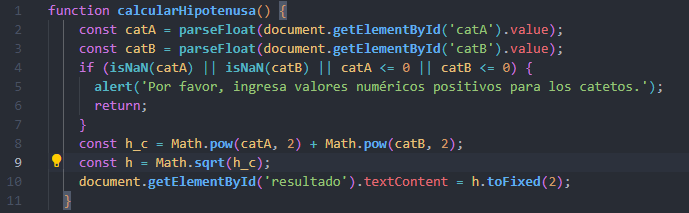

En este sitio web encontrarás prácticas de JavaScript

2.1 - Pag. 43
Realice un diagrama de flujo y pseudocódigo que representen el algoritmo para obtener el área de un triángulo.

2.6 - Pag. 44
Se requiere determinar la hipotenusa de un triángulo rectángulo. ¿Cómo sería el diagrama de
flujo y el pseudocódigo que representen
el algoritmo para obtenerla?